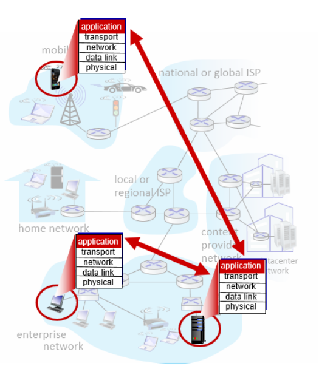
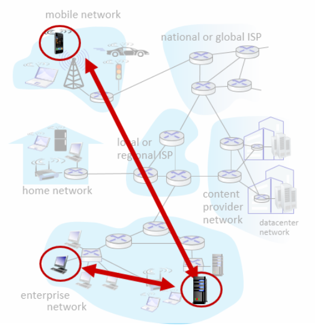

Date Taken: Fall 2025
Status: Work in Progress
Reference: LSU Professor Tasnuva Farheen, ChatGBT
Write a program that runs on different end systems. The program communicates with another program over a network using sockets. The program can be a client or a server. The program can use either TCP or UDP. The program can be written in any programming language that supports sockets.
No need to write software for network core devices (routers, switches). Network core devices do not run user applications. Application on end systems allows for rapid app development, propagation.

Server: always-on host, permanent IP address, often in data center for scaling.
Client: communicates with server, may have dynamic IP address, can be mobile. May be intermittently connected and do not communicate directly with each other. Examples: HTTP, IMAP, FTP.
